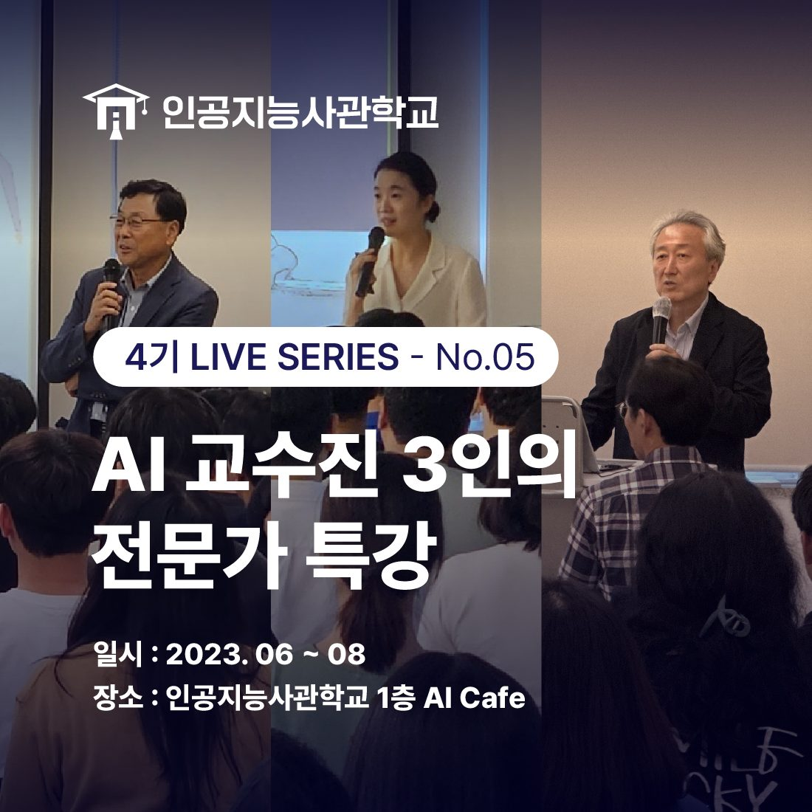
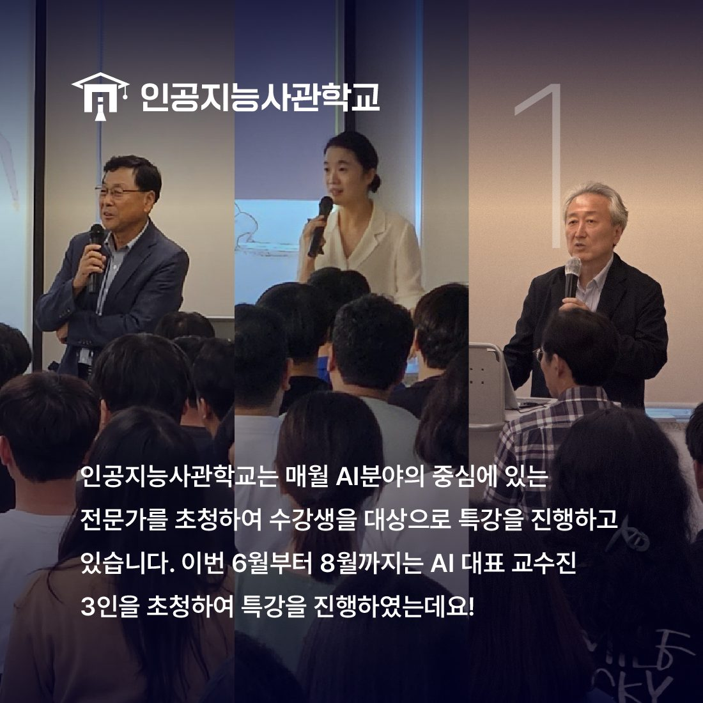
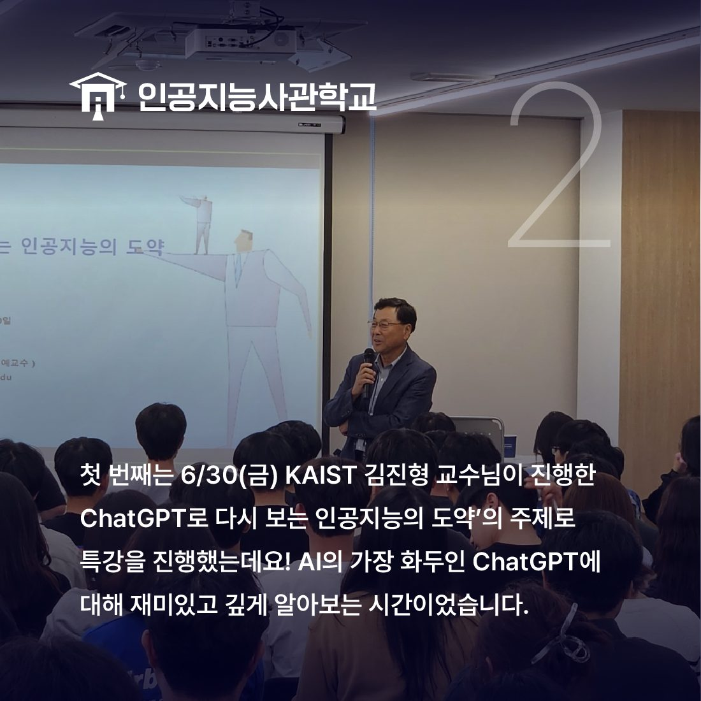
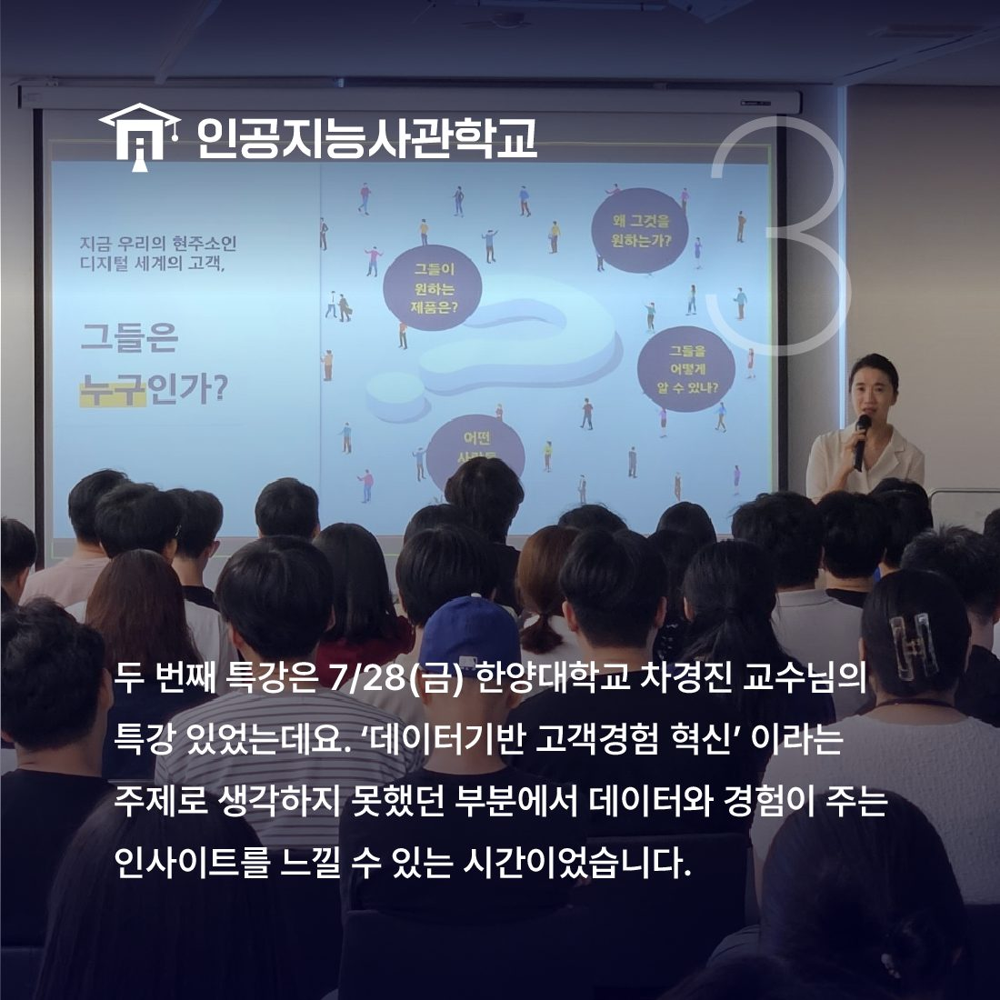
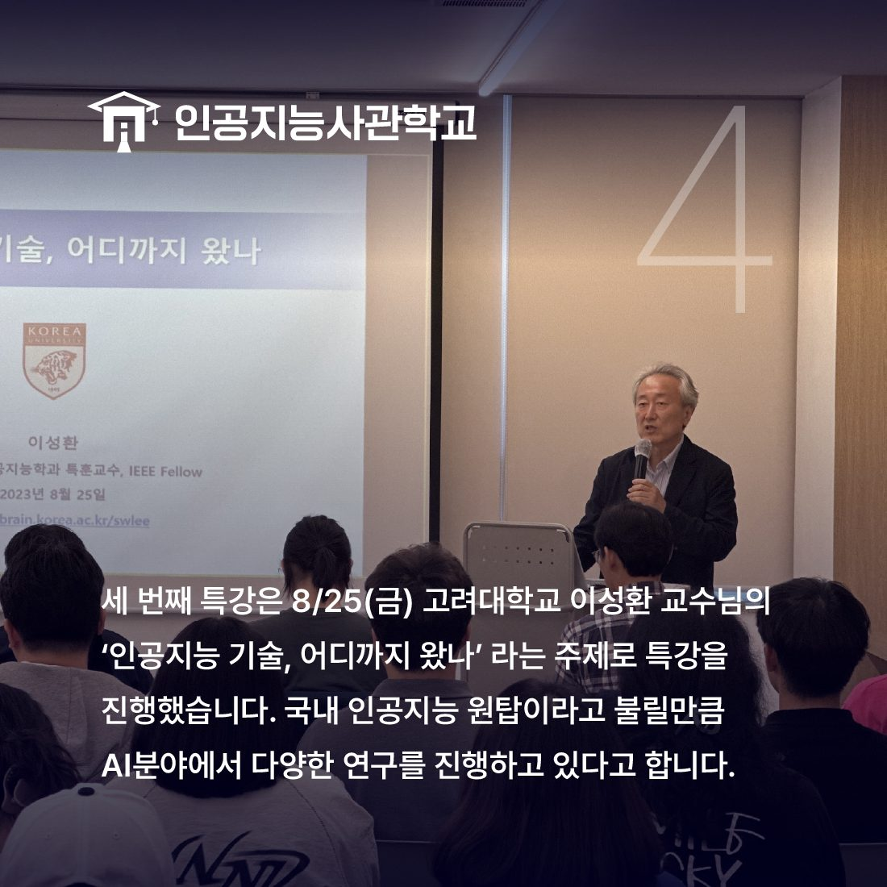
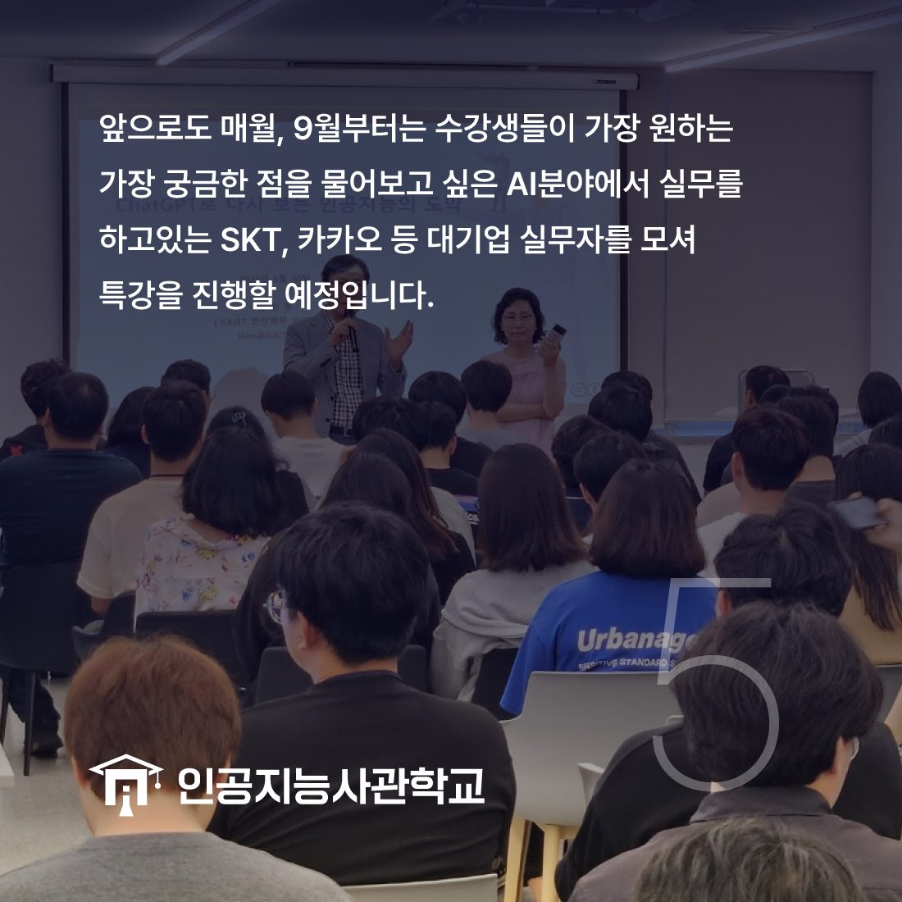

안녕하세요! 인공지능사관학교입니다. 😆

오늘은 지난 6월부터 8월까지, 세 달간 진행한
인공지능 교수진 전문가 특강에 대해
이야기 해보려고 합니다.

인공지능사관학교는 매월인공지능 분야의 중시에 있는 전문가를 초청하여
수강생을 대상으로 특강을 진행하고 있는데요.
이번 6월부터 8월까지는
인공지능 대표 교수진 3인이 함께해주셨습니다!

첫번째 특강은 6/30(금)에
Chat GPT로 다시 보는 인공지능의 도약을 주제로
KAIST 김진형 교수님이 진행하였는데요.
인공지능의 가장 화두인 Chat GPT에 대해
재미있고 깊게 알아보는 시간이었습니다.

두번째 특강은 7/28(금)에
데이터기반 고객경험혁신을 주제로
한양대학교 차경진 교수님이 진행하였는데요.
생각하지 못했던 부분에서 데이터와 경험이 주는
인사이트를 느낄 수 있는 시간이었습니다.

세번째 특강은 8/25(금)에
'인공지능 기술, 어디까지 왔나'라는 주제로
고려대학교 이성환 교수님이 진행하였는데요.
인공지능 기술의 최신 연구 현황과
앞으로의 전망을 알아볼 수 있었습니다.

매월 특강을 진행하는 인공지능사관학교에서는
9월부터 SKT, 카카오 등 대기업 실무자를 초청해
수강생들이 궁금해하는 점을 해소하고자 합니다.